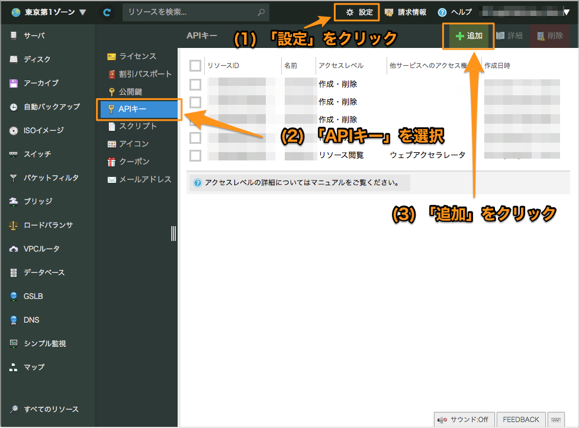

Usacloud導入ガイド
目次
usacloudとは
usacloudとは、さくらのクラウド用のCLIクライアントです。
以下のOS/Archに対応しています。
- macOS(amd64)
- Linux(i386/amd64/arm)
- Windows(i386/amd64)
インストール
macOS(brew) / Linux(apt or yum or brew) / bash on Windows(Ubuntu)
curl -fsSL https://releases.usacloud.jp/usacloud/repos/install.sh | bash
※bash_completionを有効化するには上記コマンドを実行後に再ログインしてください。
Windows(chocolatey)
choco install usacloud
chocolateyのusacloudパッケージは @223n さんによってメンテナンスされています。
Windows/その他の場合
以下のリンクからバイナリーファイルをダウンロードして展開し、任意のフォルダー内に配置してください。
(PATHを通しておくと便利です)
- Windows 64bit版 : https://releases.usacloud.jp/usacloud/repos/windows/usacloud_windows-amd64.zip
- Windows 32bit版 : https://releases.usacloud.jp/usacloud/repos/windows/usacloud_windows-386.zip
- その他の場合 : https://github.com/sacloud/usacloud/releases/latest/
bash_completionが利用できる場合は、以下のコマンドでusacloud用のbash_completionを導入することが出来ます。
curl -s -L https://releases.usacloud.jp/usacloud/contrib/completion/bash/usacloud >> ~/.bashrc
※bash_completionを有効化するには上記コマンドを実行後に再ログインしてください。
Dockerを利用する場合
usacloud実行用イメージとしてsacloud/usacloudを公開しています。
# Dockerでのusacloud実行例
docker run -it --rm \
-e SAKURACLOUD_ACCESS_TOKEN \
-e SAKURACLOUD_ACCESS_TOKEN_SECRET \
-e SAKURACLOUD_ZONE \
sacloud/usacloud server ls
whalebrewを利用する場合
Dockerイメージsacloud/usacloudはwhalebrewでのインストール/実行に対応しています。
# インストール
whalebrew install sacloud/usacloud
設定
usacloudの実行にはさくらのクラウドのAPIキーの取得/設定が必要です。
APIキーの取得
さくらのクラウドのコントロールパネルからAPIキーを発行します。
コントロールパネルにログインし、「さくらのクラウド(IaaS)」を選択します。
次に以下手順でAPIキーの追加画面を表示します。
- (1) 画面右上の「設定」をクリック
- (2) 左側に表示されるメニューから「APIキー」を選択
- (3) 一覧の右上の「追加」をクリック

APIキーの追加画面が表示されたら、各項目を入力して「追加」をクリックします。
各項目は以下のように入力してください。
- 名前 : 任意の名前を入力
- 説明 : 任意入力
- アクセスレベル :
作成・削除を選択 - 他サービスへのアクセス権 : 必要に応じてチェックを入れる
APIキーを作成したら、以下の値を控えておいてください。
- アクセストークン
- アクセスシークレット

以上でAPIキーの取得完了です。
APIキーの設定
APIキーを取得したら、usacloud configを実行しAPIキーを設定します。
画面の指示に従い、アクセストークン(token)とシークレット(secret)、操作対象のゾーン、デフォルトの出力形式を入力します。
usacloud config
Setting SakuraCloud API Token =>
Enter token: [アクセストークンを入力]
Setting SakuraCloud API Secret =>
Enter secret: [アクセスシークレットを入力]
Setting SakuraCloud Zone =>
Enter zone[is1a/is1b/tk1a/tk1v](default:tk1a): [ゾーンを入力]
Setting Default Output Type =>
Enter default-output-type[table/json/yaml/csv/tsv]: [デフォルトの出力形式を入力]
Written your settings to ~/.usacloud/default/config.json
操作対象のゾーンは以下のいずれかを入力してください。
is1a: 石狩第1ゾーンis1b: 石狩第2ゾーンtk1a: 東京第1ゾーンtk1v: サンドボックス
※
is1aは2016年7月1日以降に新規作成したアカウントでは利用できません
※ここで入力した内容は~/.usacloud/default/config.jsonにJSONファイルとして保存されます
その他のAPIキー設定方法
APIキーは環境変数での指定にも対応しています。
export SAKURACLOUD_ACCESS_TOKEN=アクセストークン
export SAKURACLOUD_ACCESS_TOKEN_SECRET=アクセスシークレット
export SAKURACLOUD_ZONE=ゾーン
また、コマンド実行時にコマンドラインオプションで上書きできます。
usacloud --token=アクセストークン --secret=アクセスシークレット --zone=ゾーン server ls
複数の箇所で指定されていた場合、以下の順で読み込みます(後から読み込んだものが優先)。
- 環境変数での設定
usacloud configでの設定- コマンド実行時の指定
以上で設定終了です。続いて基本的な使い方に進んでください。